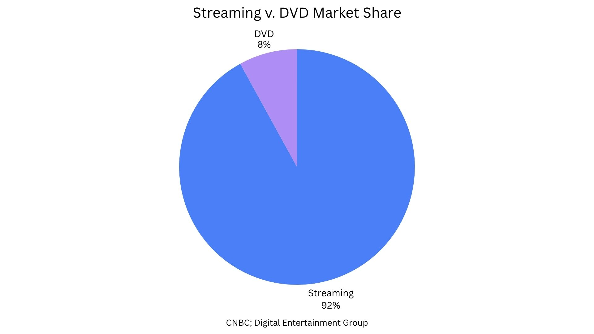

How the decline of DVDs and physical media reshaped Hollywood’s business model.
Written by Dariana Guzman
Mikey Madison in the Criterion Closet. Photo courtesy of Criterion.
DVDs once played a central role in how Hollywood films earned revenue. Today, that business has largely disappeared, replaced by streaming platforms that have reshaped how movies are financed, distributed, and consumed.
In the early 2000s, DVDs were one of the most important revenue streams in the film industry. At their peak in 2005, DVD sales reached $16.3 billion and made up about 64% of the U.S. home video market, according to industry data cited by CNBC. That second wave of income meant films could continue earning money months after their theatrical release, which helped in some films in long term successes.
“The DVD was a huge part of our business, of our revenue stream,” he said.
“Technology just made that obsolete.” He added that studios once expected a second financial boost after theaters, “You could afford to not make all of your money when it played in the theater because you knew you had the DVD coming behind the release… it would be like reopening the movie almost.”
One example of that system is the 1999 film “Fight Club.” The film earned about $37 million at the box office on a $60 million budget, it was a commercial flop. But according to The New York Times, it went on to sell more than six million DVDs and video copies, eventually becoming both a financial success and a cult classic. Its profit came not from theaters, but from home video sales.
That model began to collapse in the years that followed. According to CNBC, DVD sales fell more than 86% between 2005 and 2018, dropping from their peak of $16.3 billion to about $2.2 billion.
Physical Media’s Financial Collapse
Physical media sales, including DVD, Blu-ray and UHD, have dropped sharply since the mid-2000s.
Source: CNBC; Digital Entertainment Group
At the same time, streaming began to reshape the industry. CNBC reported that platforms like Netflix, Hulu, and HBO grew more than 1,200% between 2011 and 2018, reaching nearly $13 billion in revenue. Consumers increasingly shifted away from owning movies and toward accessing them on demand.
A 2011 Digital Entertainment Group report showed the early stages of that transition, as Blu-ray and digital formats began gaining ground while DVDs started to slow. By 2025, that shift was complete.
A personal DVD collection. Photo by Dariana Guzman.
According to the Digital Entertainment Group’s Year End 2025 report, total U.S. home entertainment spending reached $62.2 billion. Subscription streaming accounted for $57.5 billion of that total, or about 92% of the market. Physical media, including DVDs, Blu-ray, and 4K Ultra HD discs, made up a much smaller and shrinking share.
The DEG report also shows that streaming continued to grow nearly 20% in 2025, while digital purchases and rentals declined about 4% for the year. Even the digital replacement for DVDs is weakening as consumers move toward subscription based access instead of ownership.
Streaming Became the New Home Market

By 2025, streaming accounted for the vast majority of home entertainment spending in the United States.
Source: Digital Entertainment Group, 2025
As DVDs disappeared, so did the financial structure they supported. In the DVD era, films had two major chances to earn revenue: theatrical release and home video sales. A movie that struggled in theaters could still become profitable later through DVD sales.
Today, that system no longer exists in the same form. Instead of individual film sales, most home media revenue comes from streaming subscriptions, where money is spent across large libraries of content.
The shift has changed how films are evaluated. With fewer opportunities to recover costs after release, studios are more dependent on box office performance and high performing franchise films that can generate immediate returns.
The decline of DVDs did not simply remove a product, but it removed a key financial safety net that once shaped what kinds of films could be made and how success in Hollywood is defined.